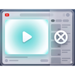

Chrome Extension
IntentionalTube
Reduce YouTube distractions and keep your study sessions intentional.
What You Get
- Hide recommendations, sidebar suggestions, comments, chat, and thumbnails.
- Set an intention before watching and keep it visible while you study.
- Use a focus timer with optional auto-blocking mode.
- Track weekly focus efficiency and consistency.
Install in 60 Seconds
- Download the latest zip and extract it on your computer.
- Open chrome://extensions (or edge://extensions).
- Enable Developer mode.
- Click Load unpacked and select the extracted project folder.
- Pin IntentionalTube and start YouTube with fewer distractions.